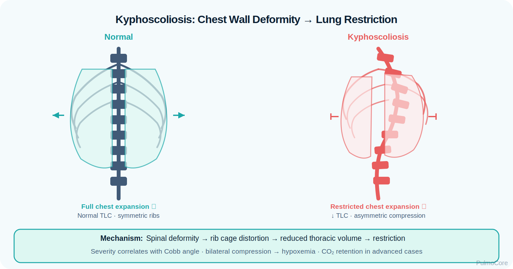
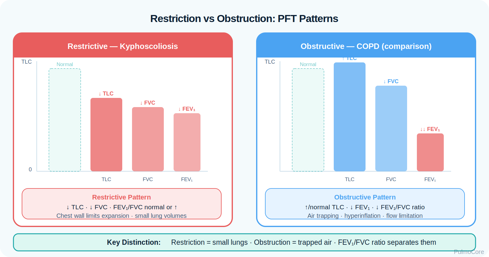

RT Clinical Connection
The RT must think beyond SpO₂. A patient with kyphoscoliosis may oxygenate acceptably while slowly retaining CO₂ because the chest wall mechanics limit ventilation.
Kyphoscoliosis is a restrictive thoracic disorder caused by abnormal spinal curvature that limits chest wall expansion, reduces lung volumes, increases work of breathing, and may progress to chronic hypoventilation, pulmonary hypertension, and right heart strain. This module focuses on RT-level assessment, diagnostic interpretation, noninvasive support, airway clearance, oxygen safety, and escalation decisions.
By the end of this kyphoscoliosis module, learners should be able to connect thoracic restriction, reduced lung volumes, hypoventilation risk, diagnostic findings, supportive therapies, and escalation priorities.
Kyphoscoliosis combines excessive posterior spinal curvature with lateral curvature. The respiratory problem is primarily restrictive: the chest wall cannot expand normally, tidal volumes may be small, and chronic hypoventilation can develop when the ventilatory pump cannot meet demand.
The RT must think beyond SpO₂. A patient with kyphoscoliosis may oxygenate acceptably while slowly retaining CO₂ because the chest wall mechanics limit ventilation.
Immediately associate kyphoscoliosis with restrictive PFTs, reduced chest wall compliance, low VT, chronic alveolar hypoventilation, nocturnal NIV, airway clearance support, and caution with oxygen-only treatment when CO₂ retention is present.
Which statement best describes the core respiratory problem in kyphoscoliosis?
Kyphoscoliosis restricts the thoracic cage. The lungs may be structurally normal, but the chest wall cannot expand efficiently. This decreases compliance, lowers lung volumes, increases work of breathing, weakens cough mechanics, and can cause chronic alveolar hypoventilation.

| Change | What Happens | Why It Matters |
|---|---|---|
| Reduced chest wall compliance | Thoracic cage is harder to expand. | Patient uses more effort for smaller breaths. |
| Low lung volumes | TLC, VC, and FVC decrease. | Classic restrictive pattern. |
| Small tidal volumes | Shallow breathing may develop. | Raises risk for atelectasis and CO₂ retention. |
| Weak cough mechanics | Low inspiratory volume and poor expiratory force. | Increases secretion retention and infection risk. |
| Chronic hypoventilation | Ventilatory pump cannot maintain alveolar ventilation. | Can produce hypercapnia, morning headaches, and somnolence. |
Early disease may show normal ABGs at rest with exertional or nocturnal desaturation. As restriction worsens, alveolar hypoventilation can cause elevated PaCO₂. A rising PaCO₂ with fatigue, somnolence, or acidosis is a major escalation sign.
Do not treat chronic hypoventilation with oxygen alone without assessing ventilation. Oxygen may improve SpO₂ while CO₂ retention continues.
Click each hotspot to reveal how chest wall restriction affects breathing.
Kyphoscoliosis may be idiopathic, congenital, neuromuscular, degenerative, traumatic, or associated with connective tissue or skeletal disorders. Respiratory severity depends on the degree of curvature, age of onset, progression, respiratory muscle strength, and comorbid lung disease.
| Cause or Risk Factor | Why It Matters | RT Focus |
|---|---|---|
| Severe spinal curvature | Greater thoracic restriction. | Watch lung volumes and WOB. |
| Neuromuscular disease | Weak respiratory muscles worsen hypoventilation. | Assess cough strength and NIV need. |
| Early-onset deformity | Can impair chest/lung growth. | Monitor long-term restriction. |
| Obesity or OSA | Adds ventilatory load and nocturnal hypoventilation risk. | Screen sleep symptoms and CO₂ retention. |
| Recurrent infections | Secretion retention and low volumes increase risk. | Prioritize airway clearance. |
Choose the best category for each item, then check your answers.
Presentation ranges from mild exertional dyspnea to chronic ventilatory failure. RT assessment should focus on breathing pattern, chest wall movement, work of breathing, cough effectiveness, secretion burden, sleep symptoms, oxygenation, and ventilation.

| Finding Type | What the RT May See |
|---|---|
| Symptoms | Dyspnea on exertion, fatigue, orthopnea, morning headaches, poor sleep, daytime somnolence. |
| Appearance | Visible spinal curvature, shallow breathing, accessory muscle use, reduced chest excursion. |
| Breath sounds | Often diminished bases; crackles may appear with atelectasis or infection. |
| Oxygenation clues | Exertional/nocturnal desaturation; worsening hypoxemia during infection. |
| Ventilation clues | Elevated PaCO₂, elevated serum bicarbonate in chronic compensation, drowsiness when acute. |
| Secretion clues | Weak cough, retained secretions, recurrent bronchitis or pneumonia. |
A stable SpO₂ does not prove ventilation is adequate. In restrictive chest wall disease, trend PaCO₂, pH, mental status, and sleep-related symptoms.
Diagnostic data helps quantify restriction, identify chronic hypoventilation, evaluate complications, and guide support decisions.
| Finding | Kyphoscoliosis Pattern |
|---|---|
| TLC | Decreased; confirms restriction. |
| FVC / VC | Decreased due to limited chest wall expansion. |
| FEV₁ | Often decreased proportionally with FVC. |
| FEV₁/FVC | Normal or increased unless obstructive disease also exists. |
| DLCO | Often normal when lung parenchyma is not the primary problem. |
| Pattern | Meaning |
|---|---|
| Normal PaCO₂ at rest | May occur in mild disease; still assess exertion and sleep. |
| Elevated PaCO₂ with normal/near-normal pH | Chronic compensated hypoventilation. |
| Elevated PaCO₂ with acidemia | Acute-on-chronic ventilatory failure. |
| Elevated bicarbonate | Suggests chronic CO₂ retention compensation. |
Chest/spine imaging demonstrates curvature and may show low lung volumes or atelectasis. Overnight oximetry, capnography, or polysomnography may identify nocturnal hypoventilation or coexisting sleep-disordered breathing.
Severity is judged by lung volumes, symptoms, gas exchange, sleep-related hypoventilation, cough effectiveness, exacerbation history, and complications such as pulmonary hypertension.
| Severity Clue | Clinical Meaning |
|---|---|
| Mild restriction | Low volumes but acceptable gas exchange and minimal symptoms. |
| Exertional limitation | Ventilatory reserve is reduced; monitor exercise desaturation. |
| Nocturnal hypoventilation | Often appears before daytime hypercapnia. |
| Daytime hypercapnia | Advanced ventilatory pump failure risk. |
| Recurrent infections | Suggests ineffective cough and secretion clearance issues. |
A patient with severe kyphoscoliosis has FVC 45% predicted, TLC 50% predicted, and FEV₁/FVC 88%. Which pattern is most likely?
The key question is whether the restrictive chest wall can support adequate ventilation, especially during sleep, infection, sedation, or acute illness.
| Red Flag | Why It Matters |
|---|---|
| Rising PaCO₂ or falling pH | Suggests worsening ventilatory failure. |
| Somnolence, confusion, morning headaches | May reflect hypercapnia or nocturnal hypoventilation. |
| Weak cough with retained secretions | Raises atelectasis and pneumonia risk. |
| Increasing oxygen need | May signal atelectasis, infection, or worsening V/Q mismatch. |
| Peripheral edema, JVD, loud P2 | Possible pulmonary hypertension or cor pulmonale. |
| Failure of NIV to improve WOB/gas exchange | Requires urgent escalation. |
Management focuses on supporting ventilation, preventing atelectasis and infection, optimizing airway clearance, treating complications, and escalating early when ventilatory failure develops.
| Intervention | Why It Helps | RT Watch Point |
|---|---|---|
| Noninvasive ventilation | Improves alveolar ventilation and unloads respiratory muscles. | Monitor PaCO₂, pH, leak, synchrony, comfort. |
| Oxygen therapy | Treats hypoxemia. | Do not ignore CO₂ retention; reassess ventilation. |
| Airway clearance | Helps mobilize secretions when cough is weak. | Use cough assist, PEP, CPT, suction as appropriate. |
| Lung expansion therapy | Reduces atelectasis risk. | Coach technique and monitor tolerance. |
| Vaccination/infection prevention | Reduces respiratory infection risk. | Reinforce prevention education. |
| Escalation to invasive ventilation | Needed for failed NIV or severe acute failure. | Prepare for difficult mechanics and close monitoring. |
Select the steps in the best general order for a kyphoscoliosis patient with suspected acute-on-chronic hypoventilation.
Kyphoscoliosis patients may acutely worsen during respiratory infection, postoperative periods, sedation, sleep, or increased secretion burden. The problem is often ventilatory pump failure rather than primary bronchospasm.
For chest wall restriction with hypercapnia, think ventilatory support. Oxygen treats hypoxemia, but NIV treats hypoventilation.
The RT is central to recognizing hypoventilation, applying NIV, monitoring gas exchange, supporting airway clearance, and teaching long-term respiratory care.
| RT Task | What to Assess or Do | Why It Matters |
|---|---|---|
| Assess ventilation | RR, pattern, VT estimate, PaCO₂, pH, ETCO₂/TcCO₂ when used, mental status. | Detects ventilatory failure. |
| Assess oxygenation | SpO₂, PaO₂, exertional/nocturnal desaturation. | Identifies hypoxemia and response. |
| Evaluate mechanics | Chest excursion, posture, accessory muscles, cough strength. | Links anatomy to breathing load. |
| Manage NIV | Interface fit, pressures, backup rate when ordered, leak, synchrony. | Supports ventilation and adherence. |
| Support airway clearance | Cough assist, PEP, CPT, suction, hydration/humidification when appropriate. | Reduces atelectasis/infection risk. |
This guided case reveals one clinical stage at a time. Learners make an RT decision, receive feedback, and then continue to the next stage.
A 34-year-old patient with severe kyphoscoliosis presents with dyspnea, fatigue, and morning headaches after several days of a respiratory infection.
Decision Question: What should the RT prioritize first?
ABG on 2 L/min nasal cannula shows pH 7.31, PaCO₂ 62 mm Hg, PaO₂ 72 mm Hg, HCO₃⁻ 31 mEq/L.
Decision Question: How should this be interpreted?
The patient is cooperative but tiring. Breath sounds are diminished in the bases. Secretions are present but cough is weak.
Decision Question: Which RT intervention best targets the ventilatory problem?
After NIV, the patient is more alert and RR decreases. Repeat ABG shows pH 7.36 and PaCO₂ 52 mm Hg. Secretions remain difficult to clear.
Decision Question: What should the RT address next?
Answer each question to complete this activity. Answer choices shuffle each time the lesson opens.
Which PFT pattern best supports kyphoscoliosis-related restriction?
Which finding is most concerning in a patient with kyphoscoliosis?
Why is oxygen-only treatment risky in chronic hypoventilation?
Which intervention best targets hypercapnic ventilatory failure from chest wall restriction?
It is a chest wall restriction problem caused by abnormal spinal curvature. The lungs may not expand fully because the thoracic cage is mechanically limited.
It is primarily restrictive. PFTs typically show decreased TLC and FVC with a normal or elevated FEV₁/FVC ratio.
Small tidal volumes, increased work of breathing, and respiratory muscle loading can reduce alveolar ventilation, especially during sleep or acute illness.
Nocturnal hypoventilation often appears before daytime hypercapnia. NIV can unload respiratory muscles and improve ventilation during sleep.
Monitor WOB, mental status, comfort, mask leak, synchrony, SpO₂, PaCO₂ or CO₂ trend, pH, and secretion clearance.
Low lung volumes and weak cough mechanics increase secretion retention, atelectasis, and infection risk.
Chronic hypoventilation, recurrent infections, atelectasis, pulmonary hypertension, and cor pulmonale are high-yield complications.
Kyphoscoliosis is a restrictive chest wall disorder. Respiratory care focuses on mechanics, ventilation, airway clearance, oxygenation, and early recognition of acute-on-chronic hypercapnic failure.
Terms are stored once and can power inline tooltips, glossary entries, and flashcards.
Click the card to flip it. Use Term → Definition or Definition → Term mode. Mark known cards to move them into the completed pile.